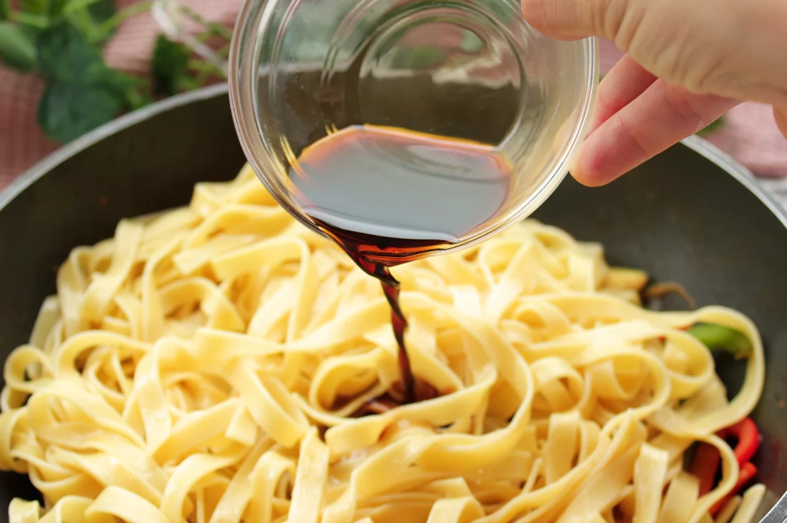

Primer paso:Pelar 1/4 de cebolla y 1 zanahoria pequeña. Retiramos las pepitas a 1/4de pimiento verde y a 1/4 de pimiento rojo. Lavamos 50 g de calabacín y troceamos todos estos ingredientes en tiras o bastones no muy gruesos.
Segundo paso:Ponemos a calentar abundante agua con 1 puñadito de sal gruesa. Cuando rompa a hervir, añadimos 80 g de tallarines secos al huevo. Cocemos los tallarines durante el tiempo que indique el fabricante. En nuestro caso, durante 6 minutos para que queden al dente.
Tercer paso:Mientras los tallarines se están cociendo, echamos en un wok 1/2 cucharada de aceite de sésamo y, cuando esté caliente, añadimos todos los vegetales troceados, salpimentamos ligeramente y condimentamos con 1/2 cucharadita de semillas de sésamo y 1 pizca de jengibre en polvo. Salteamos el conjunto a fuego alto y de forma continuada durante 5-7 minutos.
Cuarto paso:Cuando los vegetales estén al dente, incorporamos al wok los tallarines cocidos y 20 ml de salsa de soja.
Quinto paso:Salteamos a fuego alto durante un par de minutos para que se integren todos los ingredientes y se impregnen con la salsa de soja de forma homogénea.

Este es el resultado final de los tallarines con verduras y soja, delicioso plato saludable para comer cualquier dia y fácil de hacer.